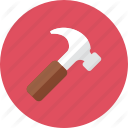

Monta-Smonta
(attività utile per saper smontare un computer e poi saperlo rimontare)
(attività utile per saper smontare un computer e poi saperlo rimontare)

Il 22/03/2022, abbiamo svolto la terza e ultima attività dell'anno che consisteva nel saper smontare un computer, vedere, analizzare e documentare attraverso alcune foto i compontenti al suo interno per poi saperlo rimontare senza rimanere con nessuna vite in mano.
La durata prevista era quella di 3 ore, che sono state divise fra spiegazione teorica di tutti i componenti e parte pratica in cui si smontavano effettivamente i computer. Per effettuare la parte pratica la classe è stata suddivisa in coppie, ognuna con un PC, non funzionanante per evitare disastri, su cui lavorare.
Prima del nostro avvento sui computer, il professore D'amicis Ignazio ci ha spiegato dettagliatamente tutti i componenti che il computer presenta.
Io e il mio compagno, Nicolò Ricchetti, non abbiamo riscontrato problemi, in quanto io avevo già avuto esperienze passate in questo ambito.
La parte pratica è stata molto veloce per il motivo prima citato. Nico ha iniziato smontando il case e alcuni componenti esterni, mentre io ho smontato la zona della CPU, ventola e scheda madre. Abbiamo fatto vedere al professore il tutto smontato dimostrando che nessuna vite era avanzata (e ne eravamo molto fieri). Fatto ciò abbiamo riferito al professore che avevamo completato l'attività e lui ci ha prontamente detto di cominciar a scrivere una relazione sull'esperienza appena svolta.
Dal mio punto di vista, questa esperienza è molto utile per gli appassionati di PC ma che non hanno mai avuto l'opportunità di smontarne uno. Per me è stato un gioco da ragazzi, ma l'ho fatto molto volentieri e lo rifarei ancora.
Copyright © 2022 - Tutti i diritti riservati - Simone Bini
Powered by Bino